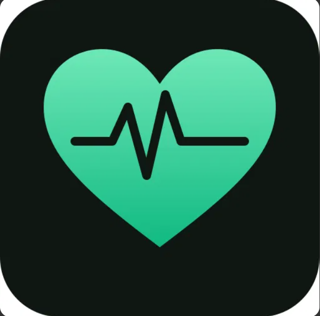

متابعة فورية
مراقبة المؤشرات والتنبيهات

منصة لمتابعة مرضى القلب
وحدة المتابعة الحرجة
مراقبة المؤشرات والتنبيهات
تعاون بين الأقسام السريرية
تقارير طبية دقيقة ومنظمة
حدد القسم الوظيفي المخصص للمتابعة والوصول للنظام
الدخول إلى النظام مخصص لموظفي مستشفى نبض الاختصاصي، ويتم توجيه المستخدم حسب صلاحيات القسم.